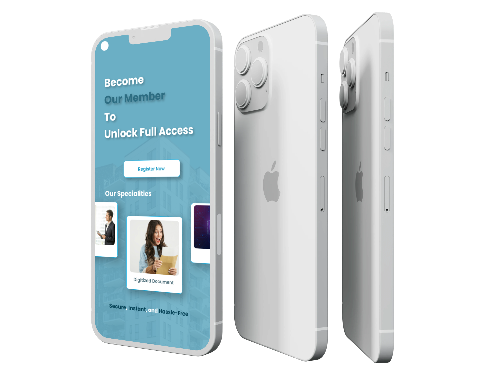
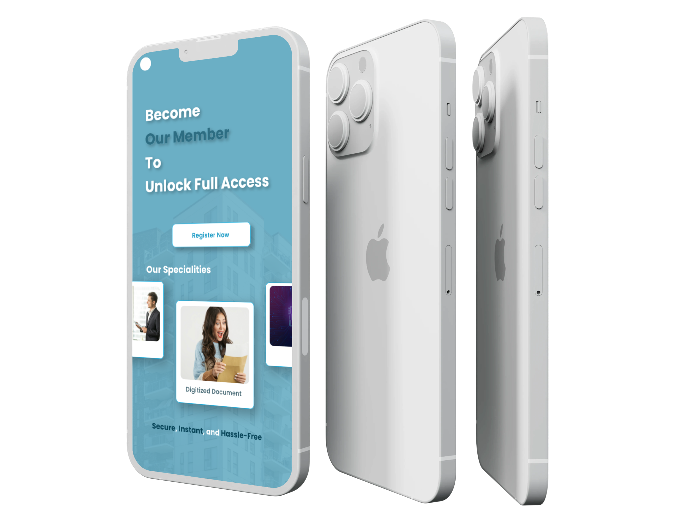

Minimalistic Real Estate App
A modern real estate mobile application focused on simplicity, clarity, and effortless property browsing for users searching for homes.
Project Overview
The goal of this project was to design a clean and intuitive real estate mobile app that allows users to browse, compare, and explore property listings without feeling overwhelmed. The design prioritizes usability, content hierarchy, and a distraction-free experience.
My Role & Context
Role: UI/UX Designer
Responsibilities: User flow design, wireframing, high-fidelity UI,
prototyping
Platform: Mobile Application
Tools: Figma , Artificial Intelligence , Photoshop
Problem & Design Approach
Problem:
Users often face difficulty navigating real estate apps due to cluttered layouts,
inconsistent property information, and poor visual hierarchy, which makes decision-making
stressful and time-consuming.
Design Approach:
I focused on a minimal, content-first design with clear typography, card-based property
listings, and intuitive navigation. Visual hierarchy and spacing were carefully used to
reduce cognitive load and help users scan and compare properties effortlessly.
Final UI Screens

 


Outcome & Learnings
This project strengthened my understanding of mobile-first design, information hierarchy, and user-centered decision-making. It reinforced the importance of simplicity in decision-heavy products and helped me improve my ability to design interfaces that feel calm, focused, and easy to use.